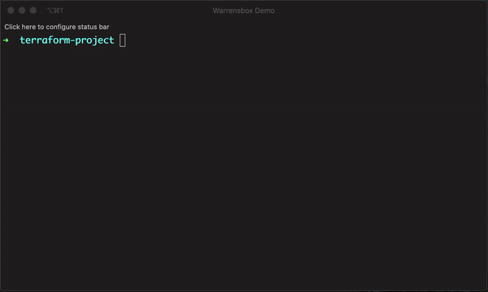
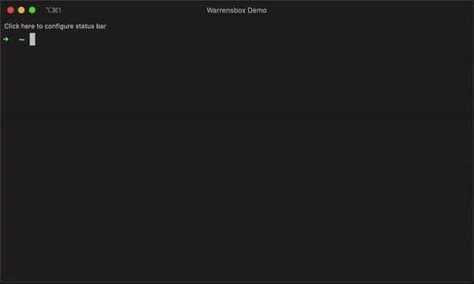
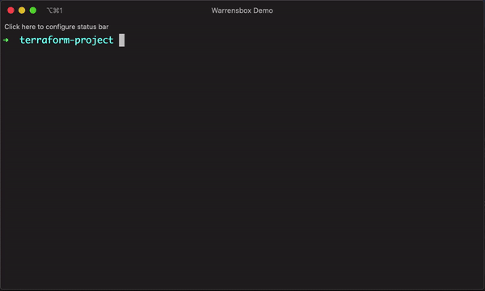

Config files
Get the version from a subdirectory
While using the file configuration it might be necessary to change the working directory. You can do that with the --chdir or -c parameter.
tfswitch --chdir terraform_dir
tfswitch -c terraform_dir
Use version.tf file
If a .tf file with the terraform constraints is included in the current directory, it should automatically download or switch to that terraform version.
For example, the following should automatically switch terraform to the lastest version:
terraform {
required_version = ">= 0.12.9"
required_providers {
aws = ">= 2.52.0"
kubernetes = ">= 1.11.1"
}
}

Use .tfswitchrc file
- Create a
.tfswitchrcfile containing the desired version - For example,
echo "0.10.5" >> .tfswitchrcfor version 0.10.5 of terraform - Run the command
tfswitchin the same directory as your.tfswitchrc
Instead of a .tfswitchrc file, a .terraform-version file may be used for compatibility with tfenv and other tools which use it
Use .tfswitch.toml file (For non-admin users with limited privilege on their computers)
This is similiar to using a .tfswitchrc file, but you can specify a custom binary path for your terraform installation
 
- Create a custom binary path. Ex:
mkdir $HOME/bin - Add the path to your PATH. Ex:
export PATH=$PATH:$HOME/bin(add this to your Bash profile or Zsh profile) - Pass
-bor--binparameter with your custom path to install Terraform. Ex:tfswitch -b $HOME/bin/terraform 0.10.8 - Optionally, you can create a
.tfswitch.tomlfile in your home directory (~/.tfswitch.toml) - Your
~/.tfswitch.tomlfile should look like this:
bin = "$HOME/bin/terraform"
version = "0.11.3"
- Run
tfswitchand it should automatically install the required terraform version in the specified binary path
NOTE
- For Linux users that do not have write permission to
/usr/local/bin/,tfswitchwill attempt to install terraform at$HOME/bin. Runexport PATH=$PATH:$HOME/binto append bin to PATH - For Windows host,
tfswitchneed to be run underAdministratormode, and$HOME/.tfswitch.tomlwithbinmust be defined (with a valid path) as minimum, below is an example for$HOME/.tfswitch.tomlon windows
bin = "C:\\Users\\<%USRNAME%>\\bin\\terraform.exe"
Setting the default version using .tfswitch.toml file
The .tfswitch.toml file can be configured with a default-version attribute to configure tfswitch a particular version, if no other sources of versions are found
default-version = "1.5.4"
Setting product using .tfswitch.toml file
The .tfswitch.toml file can be configured with a product attribute to configure tfswitch to use Terraform or OpenTofu, by default:
product = "opentofu"
or
product = "terraform"
Use terragrunt.hcl file
If a terragrunt.hcl file with the terraform constraint is included in the current directory, it should automatically download or switch to that terraform version. For example, the following should automatically switch terraform to the lastest version 0.13:
terragrunt_version_constraint = ">= 0.26, < 0.27"
terraform_version_constraint = ">= 0.13, < 0.14"
...